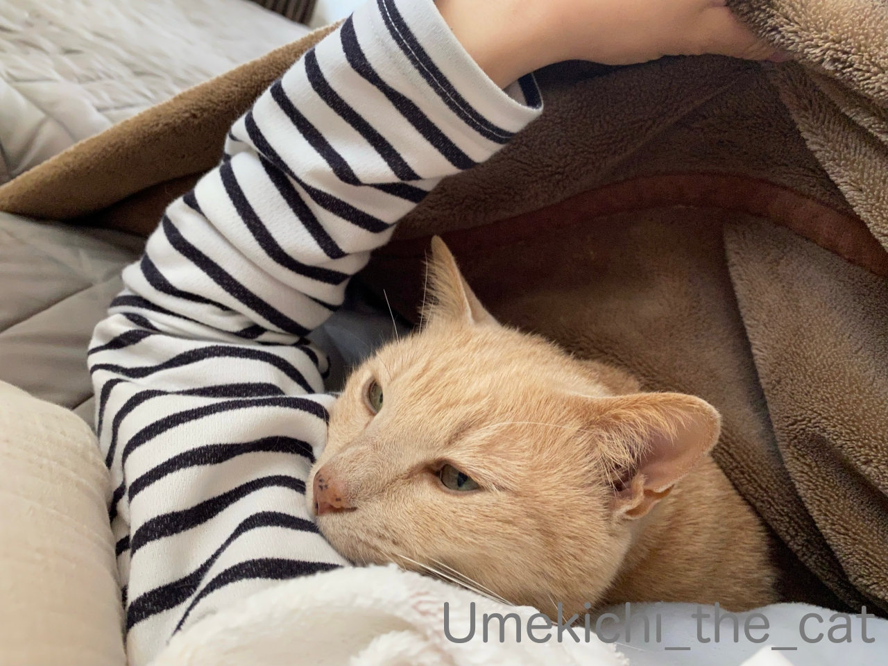
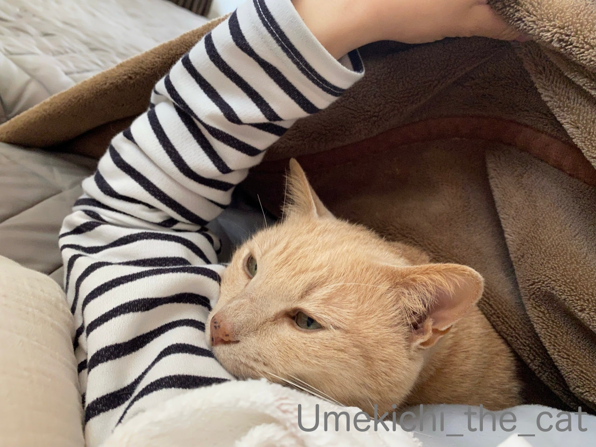

献身的に看病していただきました [梅吉]
大阪府が重症化ローリスク者に配布する抗原定性検査キット、
申し込み後一日おいてシーメンスヘルスケア社のものが送られてきました。

結構鼻の奥まで綿棒を入れるんですねぇ(^▽^;)
この時はくしゃみと咳が出ていたので綿棒を鼻に突っ込んだ拍子に
くしゃみや咳が盛大に出て大変な事になる＝検査失敗なんて想像をするw
おまけに・・・・・

梅吉が目の前に座って何か面白いことが起きるんじゃないかと
目をキラキラさせながら見つめているので思わす吹き出しそうになる。
上の写真は笑いを堪えながら鼻の中でぐりぐりした綿棒を試薬に浸そうとしている所。
綿棒を動かす度に梅吉のていていのお手手が伸びてきそうでした(≧∇≦)
無事に作業をこなして待つこと15分。
判定は「陰性」でした。
「C」のみ線が現れると陰性、「C」「T」両方に現れると陽性。
「T」のみだと検査無効。
陽性の覚悟もできてたので宙ぶらりんな結果「検査無効」を一番恐れてました。
ちゃんと結果が出て良かったよ^^
今回の症状はどうやら単なる風邪だったようです。
家にストックしてあった総合感冒薬が効いたのはそういうわけだったのねw
多少具合が悪くても布団を敷いて寝ることは滅多にないのですが今回は流石に布団で寝た。
梅吉さんはそれは熱心に献身的に添い寝看病をしてくれました(≧∇≦)
おかーさんに思いっきり寄りかかって毛繕い。
「槍を立てる」ポーズをされるとかなり重いw
![[猫]](https://blog.ss-blog.jp/_images_e/101.gif) さ、わしのそいねで ゆっくり やすんだほうが ええで
さ、わしのそいねで ゆっくり やすんだほうが ええで
場所を移動するときは必ずおかーさんの体を踏みつけながら。
この時はお腹の上を横切って左腕の方に移動です(^▽^;)

わしが うでまくらにおると ぬくいやろ？
きっと よーねむれるで さっそく ねむなってきたわぁ
脇の下に潜り込まれるのは真夏を除いて毎晩のこと。
かなりあずましくない（笑）のは確かですが慣れると熟睡できるんですよ(≧∇≦)
まだ鼻がぐずぐずしているけれど元気に動けるようになってます。
ブログご訪問はちょっとのんびりになるかもですm(_ _)m
申し込み後一日おいてシーメンスヘルスケア社のものが送られてきました。
結構鼻の奥まで綿棒を入れるんですねぇ(^▽^;)
この時はくしゃみと咳が出ていたので綿棒を鼻に突っ込んだ拍子に
くしゃみや咳が盛大に出て大変な事になる＝検査失敗なんて想像をするw
おまけに・・・・・
梅吉が目の前に座って何か面白いことが起きるんじゃないかと
目をキラキラさせながら見つめているので思わす吹き出しそうになる。
上の写真は笑いを堪えながら鼻の中でぐりぐりした綿棒を試薬に浸そうとしている所。
綿棒を動かす度に梅吉のていていのお手手が伸びてきそうでした(≧∇≦)
無事に作業をこなして待つこと15分。
判定は「陰性」でした。
「C」のみ線が現れると陰性、「C」「T」両方に現れると陽性。
「T」のみだと検査無効。
陽性の覚悟もできてたので宙ぶらりんな結果「検査無効」を一番恐れてました。
ちゃんと結果が出て良かったよ^^
今回の症状はどうやら単なる風邪だったようです。
家にストックしてあった総合感冒薬が効いたのはそういうわけだったのねw
多少具合が悪くても布団を敷いて寝ることは滅多にないのですが今回は流石に布団で寝た。
梅吉さんはそれは熱心に献身的に添い寝看病をしてくれました(≧∇≦)
おかーさんに思いっきり寄りかかって毛繕い。
「槍を立てる」ポーズをされるとかなり重いw
場所を移動するときは必ずおかーさんの体を踏みつけながら。
この時はお腹の上を横切って左腕の方に移動です(^▽^;)

脇の下に潜り込まれるのは真夏を除いて毎晩のこと。
かなりあずましくない（笑）のは確かですが慣れると熟睡できるんですよ(≧∇≦)
まだ鼻がぐずぐずしているけれど元気に動けるようになってます。
ブログご訪問はちょっとのんびりになるかもですm(_ _)m
タグ：抗原キット検査

カフェオレ色の梅吉

梅吉 2023年8月10日 永眠


梅吉と出会った譲渡会

犬猫の理由なき殺処分ゼロ
妄想広告
UMEKICHI 光

爆発的に早い！
時々攻撃的！
Thanks to Mr.Boss365
爆発的に早い！
時々攻撃的！
Thanks to Mr.Boss365

梅吉さんも興味津々だニャ～(=^・^=)
梅吉さんも検査したかったのかな？(^_^;)
陰性で良かったね～
by 英ちゃん (2023-05-04 01:12)
普通の風邪でも十分おつらかったでしょうけど、とりあえず良かったです。
梅吉さんの献身的看病ありがためい⋯いえ、ありがたいですね。
おかーさんを和ませるのが役割ですものね。良い子だわ。
ちぃさんはご無理なさらずゆっくり復活して下さい。
by zombiekong (2023-05-04 02:37)
普通に風邪でよかったです。
でもね！検査キット常備しておけって言ったでしょーが^^;
検査不可になる場合もあるから2つ。鼻腔タイプだけじゃないしね。
あと、症状が出てから陽性が出る期間ってのもあるからね。
でもまぁ、とにかく無理せず、ゆっくりしてくださいね。
梅吉さん、看病お疲れ様(笑)。看病されてる方が疲れたかもだけどー。
by ChatBleu (2023-05-04 07:26)
陰性でホント良かったですね(^-^)
何か始めると目の前にドン!横になるとグイグイ入ってくるのはそこも一緒ですね。熟睡できたでしょうか(^^;
by kou (2023-05-04 08:07)
風邪で一安心でしたね！
梅吉さんも検査に興味津々ですね、とりあえず風邪を治してからですね。
by ma2ma2 (2023-05-04 08:13)
こんにちは！
まずはひと安心ですね・・・（＾－＾）！
これでゆっくりGWを楽しめます ！！！
by Take-Zee (2023-05-04 08:49)
陰性とのこと、やれやれですね～。
もうしばらく、ゆっくり過ごしましょ！
「あずましい」が判らなかったので検索してしまいましたわ(^▽^;)
by よーちゃん (2023-05-04 09:28)
陰性でしたか、本当に良かったです。
梅吉さんとしばらくゆっくりしてくださいね。
by ameneko (2023-05-04 10:06)
単なる風邪でも栄養とご休息をとってどうぞご自愛ください。
優しい看護猫さまがいて、回復も早くなりますね。。。
by 猫の友 メルティー (2023-05-04 11:16)
よかったというか、でもここ数日急に暑くなって
風邪もいやですよね。
せっかくの連休ですし。
（それもいいんだかなんだか）
お大事にです。
インフルエンザの検査で思いっきり鼻の奥に
いれられたことがありますが
あれを自ら行うのは私にはム、ムリ^^;
by ふにゃいの (2023-05-04 11:59)
陽性でよかったです。コロナは治ってからも後遺症が長引くケースがあるので、風邪も辛いけど風邪でよかったです。お大事になさってくださいね。
良き看護ニャンが寄り添っててくれて羨ましいです(*^^*)
by 溺愛猫的女人 (2023-05-04 12:52)
長い綿棒は限りなく猫じゃらしに近い形状ですよね！
梅吉さん、よく我慢しました！^^
コロナ最盛期に職場で感染者が出た時に抗原検査をやらされましたが、思い切りクシャミ出ました。
とりあえずは陰性で何より、暑かったり寒かったりしますから調子崩しますよね。
普通の風邪でもこじらせると長引きますからどうぞお大事に。
梅吉さんの手厚い看護がうらやましい～(#^^#)
ウチのは「暇なら遊ぼう」タイプ。
家にいる＆家事をしていない＝暇人認定、病気でもそう簡単には寝かせてもらえませんから^^；
by ゆきち (2023-05-04 13:21)
こんにちは。
「抗原定性検査キット」ですが、梅吉君が眼視（爆）・・・
「目をキラキラ」みたいですが、ニャンズなりに心配していると勝手に推測です。
無事に作業をこなし「陰性」何よりでした！！
風邪みたいですが、油断は禁物、お大事になさって下さい。
梅吉君の献身的な添い寝看病、大変ありがたいですね。
また、柔軟な毛繕い披露（爆）癒し効果ありです。
それにしても良い子の梅吉君、ボスママが羨ましいがる添寝です。
無理せず「寝正月」みたいな「寝GW？」をエンジョイして下さい！？(=^･ｪ･^=）
by Boss365 (2023-05-04 13:27)
あ、記事アップされてる！ということは～
陰性でしたか！ まずはよかったです～^^
お風邪も辛いですよね。お大事に。
梅吉さん、目の前でお目目をキラキラさせながら‥綿棒にも手が出そうですねえ。無事に検査も済み、ずっと献身的な添い寝で！
梅吉さん、嬉しそうなお顔で可愛いなあ～癒し＆熟睡効果ありますね^^
by sana (2023-05-04 16:09)
検査結果が陰性で良かったですね。
検査キットが戴けるなんて良い町ですね。
by お散歩爺 (2023-05-04 18:03)
風邪（陰性）とは云え、お疲れ様でしたm(_ _)m
それにしても、梅吉さん・・・ナイス( ◠‿◠ )
興味津々なのが、背中が語っていますね(=^x^=)
腋の下で幸せそうな梅吉さん・・・佳いですね(^｡^)
by kontenten (2023-05-04 19:17)
それ、結構奥まで入れなきゃなので辛いですよね
陰性の結果でよかったです（＾＾）
梅吉君の添い寝で眠れるなんて、なんて優しいんでしょう！
by 藤並 香衣 (2023-05-04 22:40)
とりあえず陰性とのことで何よりです。それにしても、真正面でじっと眺めるカフェオレさんのお姿に思わず笑ってしまいました。^^;
「よーねむれるで」の梅吉さんのお顔、気持ちよさそう。脇で寝てくれるなんていいなあ。
「あずましくない」は「あずましい」の否定形？？？
つい調べてしまいました。^^;
by yes_hama (2023-05-04 23:57)
陰性で何よりでしたがどうぞご自愛ください。
梅吉さんの鼻に綿棒突っ込みそうになりませんでしたか(≧◇≦)
総合感冒薬と梅吉掛け布団が効いたのでしょう～
踏みつけに感じる梅吉指圧！
きっと古来より伝わる治療なのかもしれません。
栄養とって早く元気になってください(^^♪
by yamatonosuke (2023-05-05 01:30)
コロナで無くて良かったですが、風邪ですし、お大事にしてください。
ただ、梅吉さんの看病はうらやましいです。
早く良くなりますように（＞人＜）
by ごま大福＠まろ (2023-05-05 07:38)
梅吉さん献身的なサポート凄いにゃあ。
by ニコニコファイト (2023-05-05 08:25)
梅吉くんの看病がきっと効いたんだねえ^^
まずは陰性で一安心よね。
その後体調はどうかな？
だいぶ良くなってきたかしら。
ちぃさんが検査してるのをガン見してるその後ろ姿、
逞しくて後ろからぎゅーーーってしたくなるよ！！
あおはだいぶ貧相で細いからさ〜、力強くぎゅーって出来ないｗｗ
うみは逃げるしｗｗ
あずましくなくても、こんなふうに寝てくれるのは羨ましいよ〜
熟睡出来るの分かるな^^
わたしもソファーでの添い寝は熟睡しちゃうもんｗｗ
by リュカ (2023-05-05 11:57)
検査結果が陰性でよかったです。
抗原定性検査キット、一度だけ使いました。
スマホに入れていたアプリCOCOAから濃厚接触者の疑いありとの通知が来て
姉が持っていたものを使いました。陰性でした。
梅吉さんの献身的な看病の効果が素晴らしいですね。
梅吉さん、なんだか嬉しそうですよ^^
一日も早くよくなりますように。
by kuwachan (2023-05-06 00:14)
結果が陰性で本当に良かったです。でも風邪の症状も辛いですよね。
梅吉さんのつきっきりな看病で、よくなりますように。
鼻の奥まで綿棒・・・図を見ただけでも無理・・・恐怖心に押しつぶされそう＾＾；。
こっちで配布されたのは唾液で調べるキットでした。幸い、私はまだ使ったことがなく。
by Inatimy (2023-05-06 05:45)
大阪市内に住む知り合いが、コロナになりました。
チェックに、同じ検査キットを使われていたようです。
けっこう症状がきつかったようで、巣ごもりのゴールデンウイークを過ごしていたみたいです。
みんな、すっかり浮かれてしまっているようですが、
コロナの扱いが変われど、罹ったらシンドイのは変わりません。
油断禁物です！
by うめむす (2023-05-07 15:20)
慎重に挿入、ですよねー＾＾
以前インフルの検査で医者に思いっきり突っ込まれて
鼻血出るかと思いました(＠ε＠)ﾌﾞｩ
結果、陰性でよかったです(*´∀`*)
GW中にコロナ感染して、先週お休みしていた同僚がいます。
てっきり海外にでも行っているのかと思っていましたが＾＾
まだ油断できないですねㆀ
お辛かったと思いますが、梅ちゃんの添い寝介抱はうらやましい♡♡
by カトリーヌ (2023-05-15 16:07)